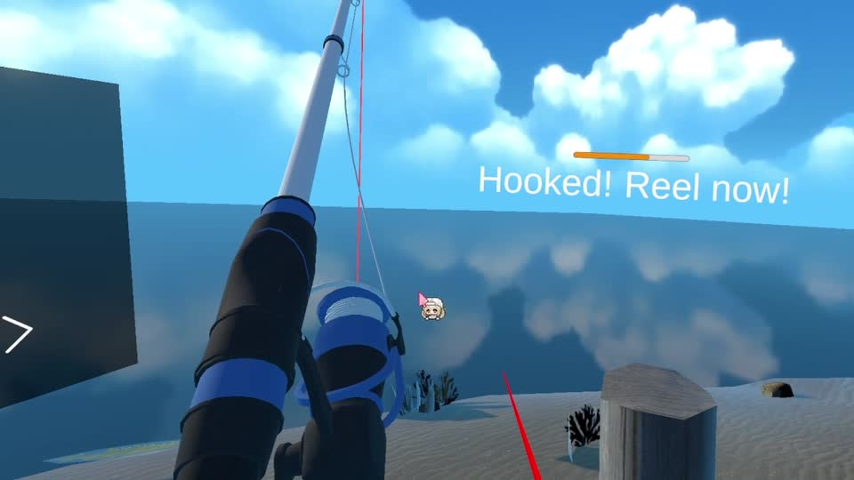

Beneath the Waves
A 3D escape room with environmental puzzles, a pipe-repair challenge, and a story ending.
MY CONTRIBUTION
Environment setup, Shader Graph effects & scene transitions.
OPEN TO INTERNSHIPS · JAN–MAY 2027
UNITY DEVELOPER / INTERACTIVE SOFTWARE STUDENT
Hi, I’m Ng Zhe Wei. I build interactive experiences with Unity and C#, from puzzle environments to changing weather and VR interaction.

VR Fishing Game / team project
01 / SELECTED WORK
Games and simulations, from Unity to DirectX 9.
Each case study explains the overall experience and my own implementation work.
A 3D escape room with environmental puzzles, a pipe-repair challenge, and a story ending.
Environment setup, Shader Graph effects & scene transitions.
A changing city environment driven by weather-state probabilities, temperature, and humidity.
The weather algorithm that selects changing conditions.
An immersive fishing experience with a virtual rod, gameplay feedback, and interactive menus.
Main menu, gameplay UI & VR controls.
A 2D arcade racing game about delivering tofu, collecting coins, and navigating obstacles against the clock.
Player input, car animation, textures & sprites.
A space-themed 2D maths game with spaceship movement, graph-based paths, and victory and lose screens.
Physics, spaceship animation & variations, victory & lose-screen UI.
Screenshots show the overall project experiences. Contribution summaries describe my individual work.
02 / A LITTLE BACKGROUND
I’m studying Computer Science at TAR UMT, specialising in Interactive Software Technology. My academic work spans Unity games, VR interaction, simulation systems, and C++ game development.
I’m looking for an internship in game development, game design, or game QA, where I can contribute my programming foundation and learn how a studio builds and improves player experiences.
Kuala Lumpur, Malaysia
TAR UMT · Interactive Software Technology
CGPA 3.70 / 4.00iTrainKids
Guided children through coding exercises and explained programming concepts through practical learning activities.
TAR UMT
CGPA 3.75 / 4.0003 / TOOLKIT
Skills developed through coursework,
team projects, and practical implementation.
04 / NEXT CHAPTER
Seeking an internship for 4 January–23 May 2027.
I’d be happy to walk you through my projects and contributions.